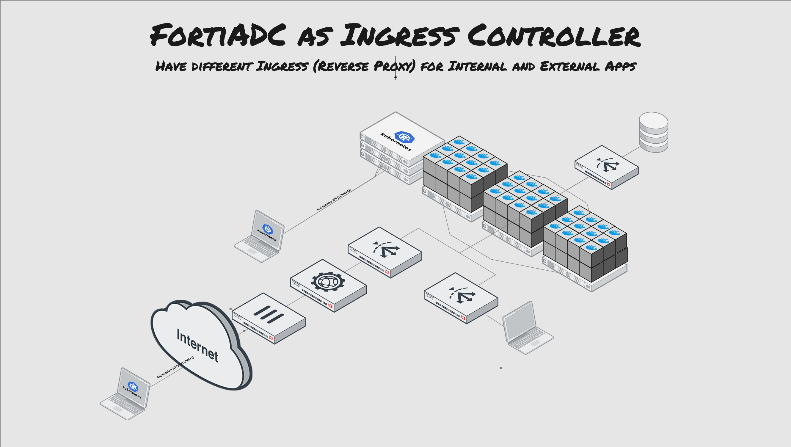

Ingress is a Kubernetes object that manages the external access to services in a Kubernetes cluster (typically HTTP/HTTPS). Ingress may provide load-balancing, SSL termination and name-based virtual hosting. FortiADC Ingress Controller combines the capabilities of an Ingress resource with the Ingress-managed load-balancer, FortiADC.

FortiADC, as the Ingress-managed load-balancer, not only provides flexibility in load-balancing, but also guarantees more security with features such as the Web Application Firewall (WAF), Antivirus Scanning, and Denial of Service (DoS) prevention to protect the web server resources in the Kubernetes cluster.